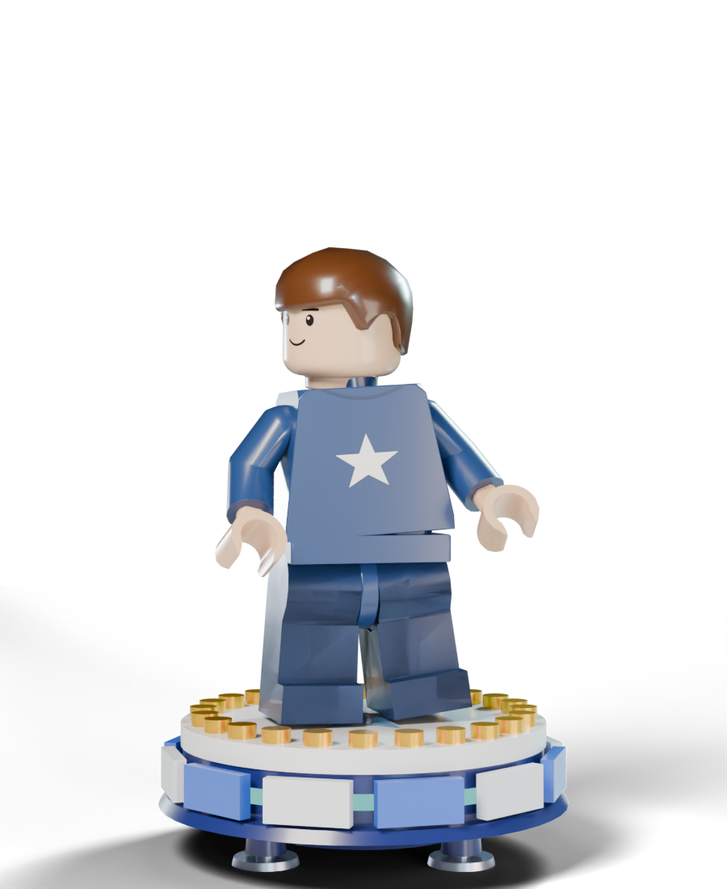

La misma figura sobre la misma Plataforma ALV. A y B se mueven en vivo en el navegador; C es una imagen fija hecha en Blender. Mira el plástico (brillos, uniones, colores), la plataforma y la sombra.
A · Como está hoySatinado del prototipo: poco brillo, por eso se ve de plastilina.B · Plástico LEGO en vivoBarniz duro, reflejos nítidos y el doble de resolución en computadora. Corre en el navegador.

C · Render de BlenderIluminación real (Cycles). Es el techo de calidad con esta geometría, pero es una imagen: no se mueve ni cambia de ropa.
Iconos
Arriba lo que hay hoy en el prototipo y en la barra; abajo renders de Blender con contorno de tinta automático.